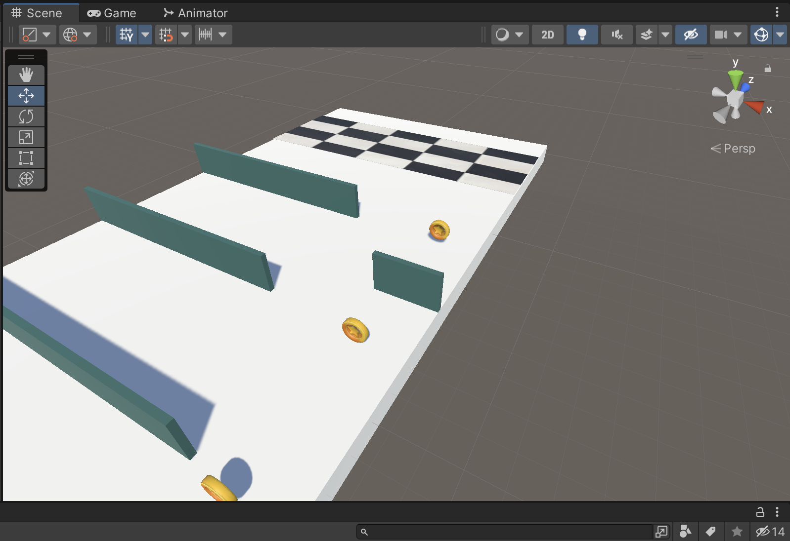
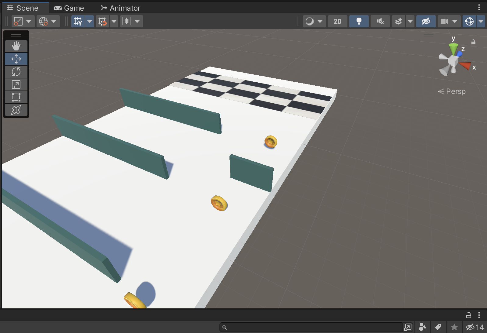
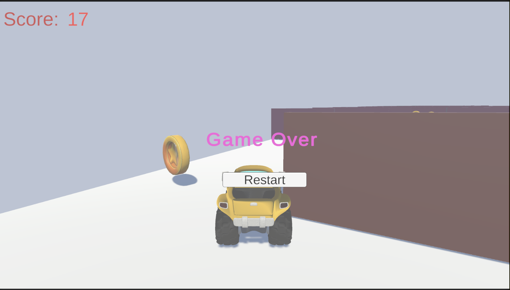
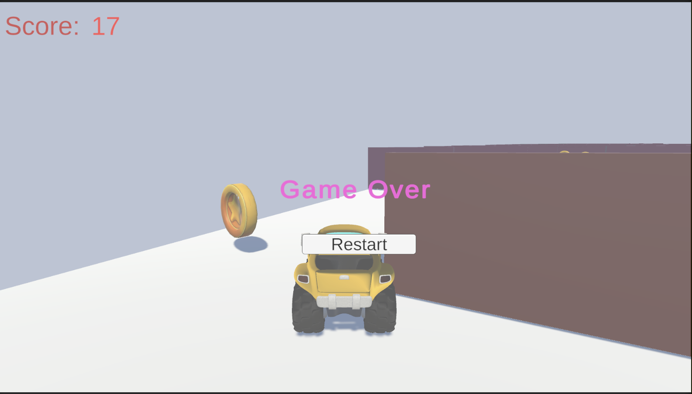

My Concept
In this project, I wanted to develop a gold coin eating game through Unity. The inspiration for the game is Metro Runner. I've loved this game since middle school and I still play it today. I refer to the tutorials of the game on the tube. This tutorial is very useful.


Modeling
I started out using squares as player models, and also modeled walls after cubes. I also designed the finish line at the end of the runway.

 

Intercations
I have collision triggers and a points mechanic in the game. When a player touches a wall the game fails. Players can get points by colliding gold coins.

 

Depressed areas need to be filled with water. At the same time I used the smoothing brush to make the mountain paths, and the plains where the house is placed.
Challenges
I encountered multiple technical challenges during the development process. The video clearly documents that when I tested it, all the gold coins flew away.
I tried many things: like combining coins, or adding rigdbody to each coin. I even restarted unity. However the problem is still not solved. Until I realized that there is something wrong with the model of the gold coins. Because my gold coin model is downloaded from the internet, it is a prefab. I didn't release the package body when I copied and pasted it, which caused my code can't apply to each gold coin. I ended up re-adding each gold coin as a separate model and this problem was solved.

Visual
Finally, I added some details: adjusted lighting, added gold coin rotation animation, replaced player model with a truck.

Arduino and Hardware
I spent a lot of time for the game and the Arduino link. The numerical references were hard to define and I had to try different values over and over again to achieve the desired effect. The prefect value is 5!